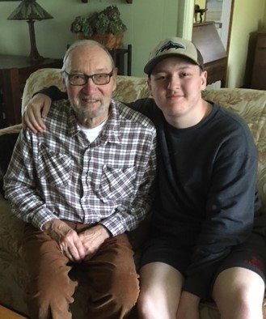

My name is Hunter Earl Graham and I am 17 years old from Morgantown WV. I like sports, video games, and my passion is marine biology. I am a competitive Valorant player who is in the top 1000 players in North America. I was born on October 3rd, 2003 in Hampton Roads, VA. I grew up as an only child with a single mom and my grandparents who live right across the street. My grandpa has been my father figure since day one and I couldn’t ask for a better one
This is my Pap and me
My grandpa is Leonard Earl Graham and he just turned 78 on April 18. He went to WVU and got his degree in Aerospace Engineering in May of 1965. He worked on the SR-71 Blackbird’s engines and got to see the plane again a few years ago at the Smithsonian Museum of Air and Space. He loves golf, cooking shows, and spending time with my grandma, mom, and myself
Here are a few of my projects that I have worked on over the course of this year
This project was inspired by an album by Kenshi Yonezu called "Stray Sheep". This link will take you to P5.JS because every time you run the code, the balls change color, size, and location
This is a project I did earlier in the year that changes colors depending on the x y positioning of the mouse. The more towards the bottom right you go, the warmer the colors get, the more up and to the left, the cooler the colors get
This is a project where a face winks when the mouse is over it. It is supposed to act like the face is being poked